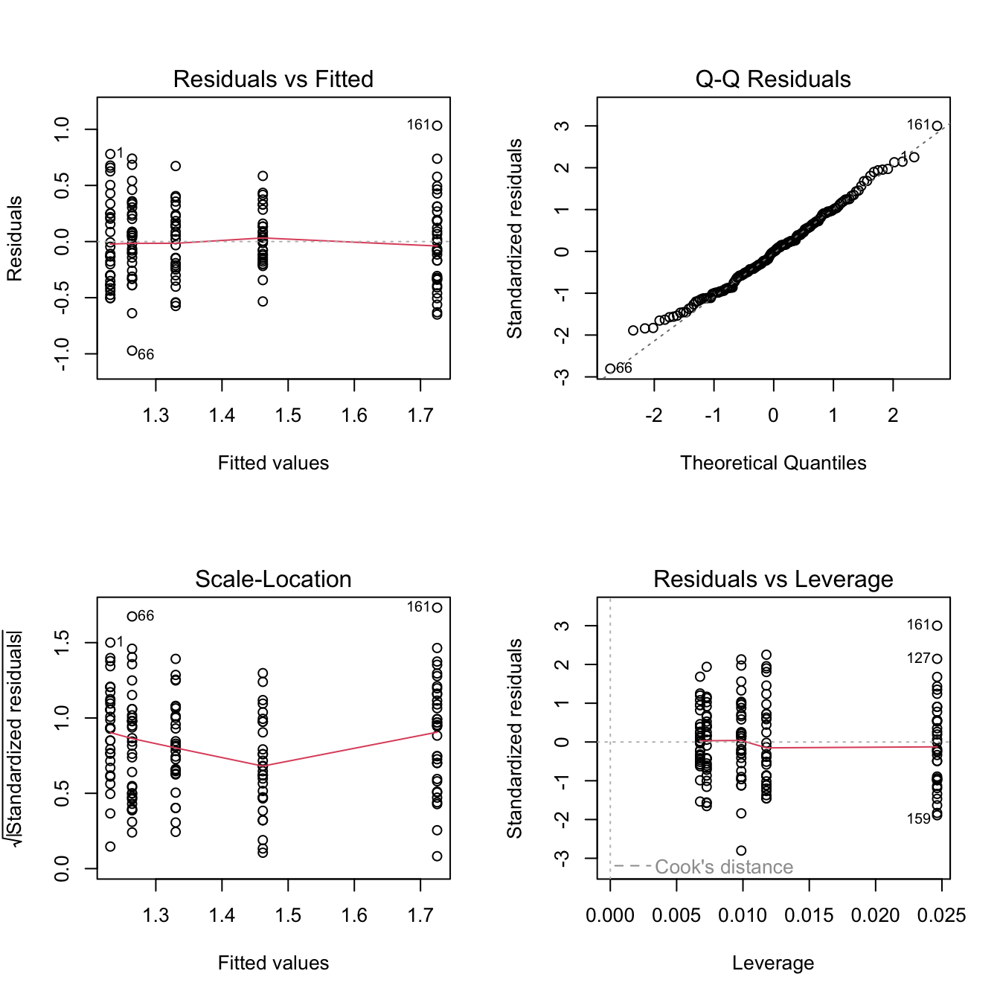

library(tidyverse)
library(skimr)
library(datasauRus)14.1 Pré-requis
Comme pour chaque nouveau chapitre, je vous conseille de travailler dans un nouveau script que vous placerez dans votre répertoire de travail, et dans une nouvelle session de travail (Menu Session > Restart R). Inutile en revanche de créer un nouveau Rproject : vos pouvez tout à fait avoir plusieurs script dans le même répertoire de travail et pour un même Rproject. Comme toujours, consultez les chapitres précédents (en particulier les sections 1.3.2 et 1.3.3) si vous ne savez plus comment faire.
Si vous êtes dans une nouvelle session de travail (ou que vous avez quitté puis relancé RStudio), vous devrez penser à recharger en mémoire les packages utiles. Dans ce chapitre, vous aurez besoin d’utiliser :
- le
tidyverse(Wickham 2023), qui comprend notamment le packagereadr(Wickham, Hester, et Bryan 2024), pour importer facilement des fichiers.csvau formattibble, le packagedplyr(Wickham et al. 2023), pour manipuler des tableaux, et le packageggplot2(Wickham et al. 2024) pour les représentations graphiques. skimr(Waring et al. 2022), qui permet de calculer des résumés de données très informatifs.datasauRus(Gillespie et al. 2024), qui fournit plusieurs jeux de données fictifs que nous examinerons en guise d’exercices.
Vous aurez également besoin des jeux de données suivants, qu’il vous faut donc télécharger dans votre répertoire de travail :
theme_set(theme_bw())14.2 Principe
La régression linéaire est une méthode qui fait partie de la famille des modèles linéaires, tout comme l’ANOVA. ANOVA et régression linéaires sont en effet deux méthodes très proches, et leur mise en œuvre dans RStudio présente de nombreuses similitudes, tant dans la syntaxe des fonctions que nous utiliserons, que dans la façon de vérifier les conditions d’application.
La régression linéaire est une méthode souvent utilisée pour prédire les valeurs d’une variable numérique (appelée variable expliquée) à partir des valeurs d’une seconde variable 9appelée variable explicative). Par exemple, le nuage de points de la figure ci-dessous montre comment la diversité génétique dans une population humaine locale peut être prédite par sa distance de dispersion depuis l’Est africain en ajustant une droite aux données (d’après Whitlock et Schluter 2015). L’homme moderne est apparu en Afrique et nos ancêtres ont perdu un peu de diversité génétique à chaque étape de leur colonisation de nouveaux territoires.

Contrairement à la corrélation, ici, on n’examine pas seulement une éventuelle liaison entre 2 variables numériques : on suppose qu’une variable peut être (en partie) expliquée par une autre. Nous aurons donc à distinguer les variables expliquées (ou dépendantes) qui figureront sur l’axe des ordonnées et seront nos variables prédites, et les variables explicatives (ou indépendantes) qui figureront sur l’axe des abscisses et seront les prédicteurs.
Contrairement à la corrélation qui, comme nous l’avons expliqué en détail, ne permet pas d’aborder les questions de causalité, lorsque l’on s’intéresse à la régression linéaire, on essaie au contraire de prédire ou d’expliquer les variations de la variable expliquée par celles de la variable explicative. En d’autres termes, on considère que les variations de la variable explicative sont au moins en partie la cause des variations de la variable expliquée.
Lorsque l’on s’intéresse à la régression linéaire, on considère que la relation qui lie les deux variables est linéaire, et on souhaite quantifier l’intensité de cette relation (quand la variable explicative augmente d’une unité, de combien d’unité la variable expliquée augmente ou diminue-t-elle ?). Nous allons voir maintenant comment mettre en œuvre cette méthode dans RStudio.
14.3 Contexte
Les activités humaines réduisent le nombre d’espèces dans un grand nombre d’écosystèmes à la surface du globe. Est-ce que cette diminution du nombre d’espèces affecte le fonctionnement de base des écosystèmes ? Où est-ce qu’au contraire, les espèces végétales sont majoritairement interchangeables, les fonctions écologique des espèces disparues1 pouvant être assurées par les espèces toujours présentes ?
1 par exemple, la production d’O\(_2\) et la fixation de CO\(_2\), la dépollution des sols, leur fixation, la protection contre les inondations et l’érosion…
Pour tenter de répondre à cette question, Tilman, Reich, et Knops (2006) ont ensemencé 161 parcelles de 9 mètres sur 9 mètres dans la réserve de Cedar Creek (Minesota, USA). Ils ont utilisé un nombre variable d’espèces typiques des prairies et ont mesuré la production de biomasse de chaque parcelle pendant 10 ans. Des lots de 1, 2, 4, 8 ou 16 plantes pluriannuelles (choisies au hasard parmi une liste de 18 espèces possibles) ont été assignés au hasard dans chacune des 161 parcelles. À l’issue des 10 années d’étude, les chercheurs ont mesuré un indice de stabilité de la biomasse en divisant la moyenne des biomasses sur 10 ans, par l’écart-type de ces mêmes biomasses.
14.4 Importation et mise en forme des données
Les données de cette expérience sont disponibles dans le fichier plantbiomass.csv.
Comme toujours, on importe les données et on commence par un examen visuel afin de détecter les éventuels problèmes et pour savoir où l’on va.
plant# A tibble: 161 × 2
nSpecies biomassStability
<dbl> <dbl>
1 1 2.01
2 1 1.91
3 1 1.89
4 1 1.86
5 1 1.74
6 1 1.66
7 1 1.57
8 1 1.48
9 1 1.48
10 1 1.45
# ℹ 151 more rowsCe premier examen nous montre que nous disposons bien de 161 observations pour 2 variables : le nombre d’espèces présentes dans la parcelle pendant 10 ans, et l’indice de stabilité de la biomasse de chaque parcelle. Visiblement, les données sont au bon format, on dispose bien de toutes les variables dont on a besoin et leurs noms sont parlants. Nous n’aurons donc pas besoin de modifier quoi que ce soit dans ces données.
14.5 Exploration statistique des données
Comme toujours, on examine quelques statistiques descriptives de position et de dispersion (voir d’incertitude), pour se faire un idée de la forme des données et pour repérer les éventuelles données manquantes ou valeurs aberrantes.
skim(plant)── Data Summary ────────────────────────
Values
Name plant
Number of rows 161
Number of columns 2
_______________________
Column type frequency:
numeric 2
________________________
Group variables None
── Variable type: numeric ──────────────────────────────────────────────────────
skim_variable n_missing complete_rate mean sd p0 p25 p50 p75 p100
1 nSpecies 0 1 6.32 5.64 1 2 4 8 16
2 biomassStability 0 1 1.41 0.394 0.293 1.12 1.39 1.65 2.76
hist
1 ▇▁▂▁▃
2 ▁▆▇▃▁Ce premier examen nous montre que nous n’avons aucune données manquantes et que l’indice de stabilité a une distribution à peu près symétrique et qu’il varie d’un peu plus de 0.3 à près de 2.8. Pour en apprendre un peu plus, nous pouvons examiner les données en groupes. Ici, la variable nSpecies est bien une variable numérique, mais elle prend seulement quelques valeurs entières (1, 2, 4, 8 ou 16 espèces). Il est donc possible de regarder les valeurs de stabilité de biomasse pour chaque nombre d’espèces dans les parcelles:
plant %>%
group_by(nSpecies) %>%
skim()── Data Summary ────────────────────────
Values
Name Piped data
Number of rows 161
Number of columns 2
_______________________
Column type frequency:
numeric 1
________________________
Group variables nSpecies
── Variable type: numeric ──────────────────────────────────────────────────────
skim_variable nSpecies n_missing complete_rate mean sd p0 p25 p50
1 biomassStability 1 0 1 1.21 0.388 0.728 0.880 1.10
2 biomassStability 2 0 1 1.28 0.360 0.293 1.09 1.32
3 biomassStability 4 0 1 1.31 0.314 0.756 1.10 1.35
4 biomassStability 8 0 1 1.50 0.251 0.928 1.32 1.48
5 biomassStability 16 0 1 1.71 0.403 1.08 1.39 1.66
p75 p100 hist
1 1.48 2.01 ▇▅▃▂▂
2 1.51 2.00 ▁▃▇▇▂
3 1.51 2.00 ▅▇▇▇▁
4 1.61 2.05 ▁▅▇▂▂
5 1.96 2.76 ▇▆▆▃▂Cette fois, on obtient des informations pour chaque groupe de parcelles contenant un nombre d’espèces spécifique. On constate par exemple que la moyenne de l’indice de stabilité de la biomasse augmente très peu entre les catégories 1, 2 et 4 espèces par parcelle, mais que l’augmentation semble plus marquée pour 8 et 16 espèces par parcelle. Tous les écarts-types semblent très proches. Les parcelles avec 1 et 16 espèces en particulier présentent des histogrammes nettement asymétriques.
Comme pour la corrélation, il est inutile ici de calculer des indices d’imprécision. Ça n’est pas la moyenne de ces variables qui nous intéresse, mais la relation entre elles. Nous serons en revanche amenés à calculer des intervalles de confiances à 95% des paramètres de la régression linéaire, puisque ce sont eux qui nous permettront de qualifier (et quantifier) la relation entre les 2 variables.
14.6 Exploration graphique des données
Visualiser les données est toujours aussi indispensable. Ici, comme pour la corrélation, on commence par un nuage de points pour visualiser les données et la forme de leur relation :
plant %>%
ggplot(aes(x = nSpecies, y = biomassStability)) +
geom_point(alpha = 0.5) +
labs(x = "Nombre d'espèces par parcelle",
y = "Indice de stabilité de la biomasse")
Ce graphique nous apprend que contrairement à la plupart des méthodes statistiques vues jusqu’ici, il n’est pas nécessaire que les données des variables soient distribuées selon une loi Normale. Ici, nous avons des données qui sont tout sauf normales pour la variable explicative puisque nous avons seulement les entiers 1, 2, 4, 8 et 16. Un histogramme ou une courbe de densité montre que la distribution de cette variable est très loin de la Normalité :
plant %>%
ggplot(aes(x = nSpecies)) +
geom_density(fill = "firebrick2", adjust = 0.2) +
labs(x = "Nombre d'espèces par parcelle",
y = "Densité")Cela n’est pas du tout problématique : comme pour l’ANOVA, les conditions d’application porteront sur les résidus de la régression, pas sur les variables elles-mêmes. Comme pour l’ANOVA, ce sont les résidus de la régression qui devront suivre une distribution Normale, pas les variables de départ.
On peut visualiser dès maintenant la droite de régression linéaire qui permet de lier ces deux variables grâce à la fonction geom_smooth(method = "lm", se = FALSE)` :
plant %>%
ggplot(aes(x = nSpecies, y = biomassStability)) +
geom_point(alpha = 0.3) +
geom_smooth(method = "lm", se = FALSE) +
labs(x = "Nombre d'espèces par parcelle",
y = "Transformation log\n de l'indice de stabilité de la biomasse")`geom_smooth()` using formula = 'y ~ x'L’argument method = "lm" indique qu’on souhaite ajouter une droite de régression sur le graphique, et se = FALSE permet de ne faire apparaître que la droite de régression, sans son intervalle d’incertitude. Nous reviendrons sur la notion d’incertitude de la régression un peu plus loin.
À supposer que nous ayons le droit d’effectuer une régression linéaire (ce qu’il faudra vérifier avec les conditions d’application, après avoir fait la régression), la pente devrait être positive.
14.7 Le test paramétrique
14.7.1 Les hypothèses
À une exception près, la procédure de régression linéaire est en tous points identique à l’analyse de variance. Quand on fait une ANOVA, la variable expliquée est numérique et la variable explicative est catégorielle (c’est un facteur). Dans RStudio, la formule ressemble donc à ceci :
\[Y \sim F\] Quand on fait une régression linéaire, les 2 variables sont numériques. La formule dans `RStudio ressemble donc à ça :
\[Y \sim X\] Dans ces formules, Y est la variable numérique expliquée, F est une variable catégorielle (ou facteur) et X est une variable numérique explicative. La forme est donc très proche, et tout le reste est identique : on exprime la variable expliquée en fonction de la variable explicative et on vérifie après coup, grâce aux résidus, si nous avions le droit ou non de faire l’analyse.
La différence majeure entre ANOVA et régression linéaire concerne les hypothèses du test. Faire une régression linéaire revient en effet à effectuer en même temps 2 tests d’hypothèses indépendants : le premier concerne l’ordonnée à l’origine de la droite de régression et le second concerne la pente de la droite de régression. On ne parle donc plus de comparer des moyennes entre groupes : on cherche à déterminer si la pente et l’ordonnée à l’origine de la meilleure droite de régression possible valent zéro ou non. Les hypothèses de ces tests sont les suivantes :
Pour l’ordonnée à l’origine (“intercept” en anglais) :
- H\(_0\) : l’ordonnée à l’origine de la droite de régression vaut 0 dans la population générale.
- H\(_1\) : l’ordonnée à l’origine de la droite de régression est différente de 0 dans la population générale.
Pour la pente (“slope” en anglais) :
- H\(_0\) : la pente de la droite de régression vaut 0 dans la population générale. Autrement dit, il n’y a pas de lien entre les deux variables.
- H\(_1\) : la pente de la droite de régression est différente de 0 dans la population générale. Autrement dit, il y a bien un lien entre les deux variables étudiées.
Vous notez qu’ici, comme pour tous les autres tests statistiques traités dans ce livre en ligne, les tests ne permettent que de rejeter ou non les hypothèses nulles. Si on rejette ces hypothèses, le test ne nous dit rien de la valeur de la pente et de l’ordonnée à l’origine. On sait que ces paramètres sont significativement différents de zéro, mais rien de plus. Il faudra alors recourir à l’estimation pour déterminer la valeur de ces paramètres, ainsi que leurs intervalles d’incertitude.
14.7.2 Réalisation du test
Pour faire une régression linéaire dans RStudio, on utilise la fonction lm() (comme linear model). Et comme pour l’ANOVA, les résultats de l’analyse doivent être stockés dans un objet puisque cet objet contiendra tous les éléments utiles pour vérifier les conditions d’application :
reg1 <- lm(biomassStability ~ nSpecies, data = plant)Comme pour l’ANOVA, on affiche les résultats de ces tests à l’aide de la fonction summary()
summary(reg1)
Call:
lm(formula = biomassStability ~ nSpecies, data = plant)
Residuals:
Min 1Q Median 3Q Max
-0.97148 -0.25984 -0.00234 0.23100 1.03237
Coefficients:
Estimate Std. Error t value Pr(>|t|)
(Intercept) 1.198294 0.041298 29.016 < 2e-16 ***
nSpecies 0.032926 0.004884 6.742 2.73e-10 ***
---
Signif. codes: 0 '***' 0.001 '**' 0.01 '*' 0.05 '.' 0.1 ' ' 1
Residual standard error: 0.3484 on 159 degrees of freedom
Multiple R-squared: 0.2223, Adjusted R-squared: 0.2174
F-statistic: 45.45 on 1 and 159 DF, p-value: 2.733e-10Dans la forme, ces résultats sont très proches de ceux de l’ANOVA. La rubrique Residuals donne des informations sommaires sur les résidus. Ces informations sont utiles puisque les résidus serviront à vérifier les conditions d’application de la régression. À ce stade, on regarde surtout si la médiane des résidus est proche de 0 et si les résidus sont à peu près symétriques (les premier et troisième quartiles ont à peu près la même valeur absolue, idem pour le minimum et le maximum).
Le tableau Coefficients est celui qui nous intéresse le plus puisqu’il nous fournit, outre la réponse aux 2 tests, les estimations pour l’ordonnée à l’origine et la pente de la droite de régression.
Avant d’aller plus loin dans l’interprétation de ces résultats, il nous faut déterminer si nous avions bel et bien le droit de réaliser cette régression, en vérifiant si ses conditions d’application sont remplies.
14.7.3 Conditions d’application
Les conditions d’application de la régression sont les mêmes que celles de l’ANOVA. Je vous renvoie donc à la Section 12.6.2 pour savoir quelles sont ces conditions d’application et comment les vérifier. J’insiste bien sur le fait que les conditions d’application sont absolument identiques à celles de l’ANOVA. Si je fais ici l’économie de la description, vous ne devez jamais faire l’économie de la vérification des conditions d’application.
par(mfrow = c(2, 2))
plot(reg1)
par(mfrow = c(1, 1))C’est seulement après avoir réalisé, examiné et commenté ces graphiques que vous serez en mesure de dire si oui ou non vous aviez le droit de faire la régression linéaire, et donc d’en interpréter les résultats.
Ici, les conditions d’application semblent tout à fait remplies :
- Les deux graphiques de gauche confirment que les résidus sont homogènes. En particulier, sur le premier graphique (en haut à gauche), la ligne rouge est presque parfaitement horizontale, il y a à peu près autant de résidus au-dessus qu’en dessous de la ligne pointillée, et les résidus pourraient rentrer dans une boîte ayant la même hauteur d’un bout à l’autre du graphique (pas d’effet “entonnoir” ou “nœud papillon”).
- Le graphique quantile-quantile (en haut à droite), montre des points qui sont presque parfaitement alignés sur la droite pointillée, indiquant des résidus distribués selon une distribution Normale.
On pourrait vérifier ces éléments avec des tests statistiques (encore une fois, reportez vous à la Section 12.6.2 si vous ne vous rappelez plus comment faire), mais c’est ici inutile tant les conditions semblent bien respectées.
Le dernier graphique (en bas à droite, “Residuals vs Leverage”) ne permet pas de vérifier les conditions d’application à proprement parler, mais permet de repérer des points ayant un poids trop important dans l’analyse. Ces points devraient être retirés s’il y en a (ce qui n’est pas le cas ici), car leur influence est tellement forte qu’ils faussent grandement les résultats de l’analyse. Pour voir à quoi ce graphique ressemble quand de tels points sont présents, je représente ci-dessous un exemple fictif.
Imaginez un jeu de données dans lequel absolument aucune tendance n’est présente. Le nuage de points d’un tel jeu de données devrait être approximativement circulaire, avec une droite de régression presque horizontale, indiquant une absence de lien entre les 2 variables étudiées x et y :
Imaginez maintenant qu’on ajoute à ces données un unique point (en rouge sur le graphique), très éloigné des autres :
La seule présence de ce point modifierait très fortement les résultats de la régression linéaire :
Sans ce point supplémentaire, la droite de régression a une pente légèrement négative, avec ce point, la pente est fortement positive. Il n’est pas normal qu’une observation unique prenne le pas sur toutes les autres (il y en a 50) et qu’elle affecte autant les résultats de la régression. la situation est ici caricaturale, et on voit bien qu’il faudrait retirer la valeur atypique pour obtenir des résultats censés. Les points ayant une influence démesurée sur les résultats ne sont pas toujours aussi évidents à repérer. C’est justement à cela que sert le graphique “Residuals vs Leverage” :
Sur ce graphique, les points qui apparaissent au-delà des lignes pointillées (en haut à droite ou en bas à gauche du graphique) sont ceux qui ont une influence trop forte sur les résultats et qu’il faudrait donc retirer des données pour obtenir des résultats plus représentatifs de la tendance observée pour la majorité des points.
Si je reviens à nos données de stabilité des biomasses en fonction du nombre d’espèces par parcelles, les lignes courbes pointillées qui délimitent les zones “à problème” ne sont même pas visibles sur le graphique. Nous n’avons donc pas de points problématiques.
Au final, les conditions d’application de la régression sont parfaitement vérifiées et nous pouvons donc en interpréter les résultats.
14.7.4 Interprétation des résultats
Revenons donc à l’affichage des résultats :
summary(reg1)
Call:
lm(formula = biomassStability ~ nSpecies, data = plant)
Residuals:
Min 1Q Median 3Q Max
-0.97148 -0.25984 -0.00234 0.23100 1.03237
Coefficients:
Estimate Std. Error t value Pr(>|t|)
(Intercept) 1.198294 0.041298 29.016 < 2e-16 ***
nSpecies 0.032926 0.004884 6.742 2.73e-10 ***
---
Signif. codes: 0 '***' 0.001 '**' 0.01 '*' 0.05 '.' 0.1 ' ' 1
Residual standard error: 0.3484 on 159 degrees of freedom
Multiple R-squared: 0.2223, Adjusted R-squared: 0.2174
F-statistic: 45.45 on 1 and 159 DF, p-value: 2.733e-10Outre une description synthétique de la distribution des résidus, ces résultats nous apprennent que :
- l’ordonnée à l’origine (intercept) est estimée à 1.198 (rappelez-vous que cette valeur fait référence à l’indice de stabilité de la biomasse)
- la pente est estimée à 0.033 (quand le nombre d’espèces augmente d’une unité, l’indice de stabilité de la biomasse augmente de 0.033 unités)
Les \(p-\)values de chacun des 2 tests sont fournies dans la dernière colonne et sont ici très inférieures à \(\alpha\) : on rejette donc les 2 hypothèses nulles. En particulier, puisque l’hypothèse nulle est rejetée pour le test qui concerne la pente de la droite, on peut considérer que le nombre de plantes dans les parcelles influence bel et bien l’indice de stabilité de la biomasse. Autrement dit, le nombre de plantes dans les parcelles, permet, dans une certaine mesure, de prédire la valeur de l’indice de stabilité de la biomasse.
La relation n’est toutefois pas très forte : le nombre de plantes dans chaque parcelle ne permet de prédire l’indice de stabilité de la biomasse que dans une mesure assez faible. C’est le Adjusted R-squared qui nous indique quelle est la “qualité” de prédiction du modèle. Ici, il vaut 0.22. Cela signifie que 22% des variations de l’indice de stabilité de la biomasse sont prédits par le nombre de plantes dans les parcelles. Une autre façon de présenter les choses consiste à dire que 78% des variations de l’indice de stabilité de biomasse sont expliqués par d’autres facteurs que celui que nous avons pris en compte dans notre modèle de régression linéaire (i.e. le nombre d’espèces par parcelle). Le \(R^2\) (à en pas confondre avec le coefficient de corrélation \(r\)) renseigne sur la qualité de l’ajustement des données à la droite de régression. Il nous indique ici que le pouvoir prédictif de notre modèle linéaire est assez faible. Il est néanmoins significatif, ce qui indique que notre variable explicative joue bel et bien un rôle non négligeable dans les variations de la variable expliquée. Une autre façon de comprendre ce résultat est la suivante : si on connait le nombre de plantes dans une parcelle, on peut prédire 22% de la valeur de l’indice de stabilité de la biomasse.
14.7.5 Intervalle de confiance de la régression
L’équation de notre droite de régression vaut donc :
\[ y = 0.033 \times x + 1.198\] Avec y, l’indice de stabilité de la biomasse, et x, le nombre d’espèces par parcelles. On voit bien que la droite nous permet de prédire une valeur d’indice de stabilité de la biomasse pour un nombre d’espèces donnée par parcelle, y compris pour des nombres d’espèces qui n’ont pas été testés. par exemple, pour $n = $ 6 espèces, on peut s’attendre à un indice de stabilité de la biomasse de \(0.033 * 6 + 1.198 = 1.396\). Il convient toutefois de prendre deux précautions très importantes quand on fait ce genre prédiction :
la régression et son équation ne sont valables que sur l’intervalle que nous avons étudié pour la variable explicative. Ainsi, on peut faire des prédictions pour des valeurs de nombre d’espèces comprises entre 1 et 16, mais pas au-delà. En effet, rien ne nous dit que cette relation reste valable au-delà de la gamme \(n =\) [1 ; 16]. Peut-être la relation change-t-elle de nature à partir de \(n =\) 20 espèces par parcelles. Peut-être que la pente devient nulle ou négative. Ou peut-être la relation n’est-elle plus linéaire au-delà de \(n =\) 16 espèces par parcelle. En bref, puisque nous n’avons des informations sur le comportement de notre système d’étude que pour une gamme de valeurs précises sur l’axe des
x, il nous est impossible de prédire quoi que ce soit en dehors de cette gamme de valeurs.Même à l’intérieur de la gamme de valeur permettant de faire des prédictions, toute prédiction est entachée d’incertitude. Pour s’en convaincre, il suffit de regarder la grande dispersion des valeurs observées pour
ypour chaque valeur dex. Par exemple, pour $n = $ 8 espèces par parcelle, les valeurs observées pour l’indice de stabilité vont de moins de 1 à plus de 2. Le modèle prédit une valeur d’environ 1.46 (\(0.033 * 8 + 1.198 = 1.462\)), mais on voit bien que l’incertitude persiste. C’est la raison pour laquelle on aura toujours besoin de calculer des indices d’incertitude, pour avoir une idée de l’erreur commise lorsque l’on fait une prédiction.
Prudence avec les prédictions
Une droite de régression permet de faire des prédictions :
- uniquement sur la gamme de valeurs de l’axe des
xqui a permis d’établir l’équation de la droite de régression - avec une imprécision/incertitude qu’il est toujours nécessaire d’estimer.
La pente et l’ordonnée à l’origine de cette droite de régression ont été obtenues à partir des données d’un échantillon (ici, \(n =\) 161 parcelles). Il s’agit donc d’estimations des pentes et ordonnées à l’origine de la relation plus générale qui concerne la population globale, mais que nous ne connaîtrons jamais avec précision. Comme toute estimation, les valeurs de pente et d’ordonnée à l’origine de la droite de régression sont entachées d’incertitude. Nous pouvons quantifier ces incertitudes grâce au calcul des intervalles de confiance à 95% de ces 2 paramètres :
confint(reg1) 2.5 % 97.5 %
(Intercept) 1.11673087 1.27985782
nSpecies 0.02328063 0.04257117Ces résultats nous indiquent que les valeurs d’ordonnées à l’origine les plus probables dans la population générale sont vraisemblablement comprises entre 1.117 et 1.280. De même, les valeurs de pentes les plus probables dans la population générale sont vraisemblablement situées dans l’intervalle [0.023 ; 0.043]. Autrement dit, pour la pente de la droite de régression, la meilleure estimation possible vaut 0.033, mais dans la population générale, les valeurs comprises dans l’intervalle [0.023 ; 0.043] sont parmi les plus probables.
Il est possible de visualiser cette incertitude grâce à la fonction geom_smooth() utilisée plus tôt, en spécifiant se = TRUE :
plant %>%
ggplot(aes(x = nSpecies, y = biomassStability)) +
geom_point(alpha = 0.3) +
geom_smooth(method = "lm", se = TRUE) +
labs(x = "Nombre d'espèces par parcelle",
y = "Transformation log\n de l'indice de stabilité de la biomasse") +
scale_y_continuous(breaks = seq(0, 3, 0.25))`geom_smooth()` using formula = 'y ~ x'Dans la population générale, la vraie droite de régression peut se trouver n’importe où dans la bande grise. Cet intervalle d’incertitude est bien moins large que l’étendue des données sur l’axe des ordonnées, et c’est tant mieux. Il correspond à l’incertitude de la moyenne de l’indice de stabilité de la biomasse pour une valeur donnée de la variable explicative. Ainsi, par exemple, si on réalise une expérience avec plusieurs parcelles contenant toutes 8 espèces, alors, la régression et son incertitude associée nous disent que **la moyenne* de l’indice de stabilité de la biomasse vaudra environ 1.46 (la valeur de la droite de régression pour x = 8), avec un intervalle de confiance à 95% de [1.40 ; 1.51] (l’étendue de la zone grisée autour de la courbe pour \(n =\) 8 espèces.
14.8 L’alternative non paramétrique
Lorsque les conditions d’application de la régression linéaire ne sont pas vérifiées, on a principalement deux options :
- On essaie de transformer les données afin que les résidus de la régression se comportent mieux. Cela signifie tester différents types de transformations (passage au logarithme, à l’inverse, à la racine carrée…), ce qui peut être chronophage pour un résultat pas toujours garanti. Il existe de très nombreuses transformations et trouver la meilleure n’est pas trivial. Par ailleurs, l’interprétation d’une relation linéaire impliquant des données transformées n’est pas toujours aisée.
- On utilise d’autre types de modèles de régression, en particulier les modèles de régressions linéaires généralisées (GLM), qui s’accommodent très bien de résidus non normaux et/ou non homogènes. Ces méthodes sont aujourd’hui préférées à la transformation des données et elles donnent de très bons résultats. Mais il s’agit là d’une toute autre classe de méthodes qui ne sont pas au programme de la licence.
14.9 Exercices
14.9.1 Datasaurus et Anscombe
Exécutez les commandes suivantes :
library(datasauRus)
datasaurus_dozen %>%
group_by(dataset) %>%
summarize(
moy_x = mean(x),
moy_y = mean(y),
ecart_type_x = sd(x),
ecart_type_y = sd(y),
correl_x_y = cor(x, y),
pente = coef(lm(y~x))[2],
ordonnee_origine = coef(lm(y~x))[1]
)Examinez attentivement les nombreux résultats produits par cette commande. Vous devriez remarquer que pour ces 13 jeux de données, 2 variables numériques x et y sont mises en relation. Pour tous ces jeux de données, on observe que la moyenne de tous les x est la même, la moyenne de tous les y est la même, les écarts-types des x sont identiques, les écarts-types des y aussi, la corrélation entre x et y est également extrêmement proche pour tous les jeux de données, et lorsque l’on effectue une régression linéaire de y en fonction de x, les ordonnées à l’origine et les pentes des droites de régression sont extrêmement proches pour les 13 jeux de données.
Si on s’en tient à ces calculs d’indices synthétiques, on pourrait croire que ces jeux de données sont identiques ou presque. Pourtant, ce n’est pas par hasard que je vous répète à longueur de temps qu’il est indispensable de regarder les données avant de se lancer dans les analyses et les statistiques. Car ici, ces jeux de données sont très différents ! Conclure qu’ils sont identiques simplement parce que les statistiques descriptives sont égales, serait une erreur majeure :
datasaurus_dozen %>%
ggplot(aes(x, y, color = dataset)) +
geom_point(show.legend = FALSE) +
facet_wrap(~dataset, ncol = 3) +
theme_bw()
Le quartet d’Anscombe est un autre exemple de ce type de problème.
Dans la console, exécutez la commande suivante (il vous faudra peut-être presser la touche Entrée plusieurs fois) pour produire les 4 graphiques d’Anscombe :
example(anscombe)Examinez attentivement les nombreux résultats produits par cette commande dans la console, ainsi que les 4 graphiques obtenus. Vous devriez remarquer que pour ces 4 jeux de données, 2 variables numériques sont là encore mises en relation, et qu’elles présentent toutes les mêmes caractéristiques. En particulier, les régressions linéaires ont toutes les mêmes pentes et ordonnées à l’origine. Pourtant, seule l’une de ces régressions linéaires est valide. Pourquoi ?
14.9.2 In your face
Les hommes ont en moyenne un ratio “largeur du visage sur longueur du visage” supérieur à celui des femmes. Cela reflète des niveaux d’expression de la testostérone différents entre hommes et femmes au moment de la puberté. On sait aussi que les niveaux de testosterone permettent de prédire, dans une certaine mesure, l’agressivité chez les mâles de nombreuses espèces. On peut donc poser la question suivante : la forme du visage permet-elle de prédire l’agressivité ?
Pour tester cela, Carré et McCormick (2008) ont suivi 21 joueurs de hockey sur glace au niveau universitaire. Ils ont tout d’abord mesuré le ratio largeur du visage sur longueur du visage de chaque sujet, puis, ils ont compté le nombre moyen de minutes de pénalité par match reçu par chaque sujet au cours de la saison, en se limitant aux pénalités infligées pour cause de brutalité. Les données sont fournies dans le fichier hockey.csv.
Importez, examinez et analysez ces données pour répondre à la question posée.